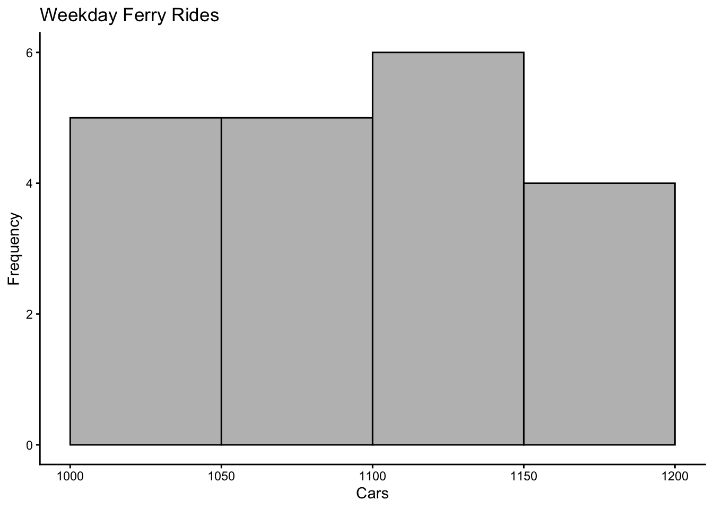
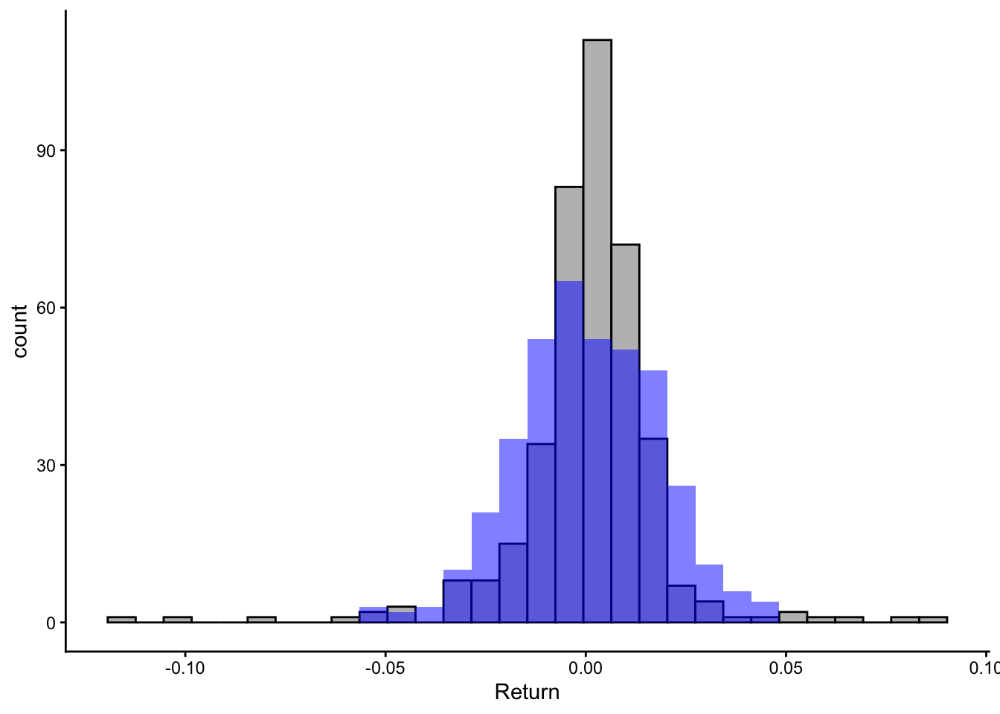
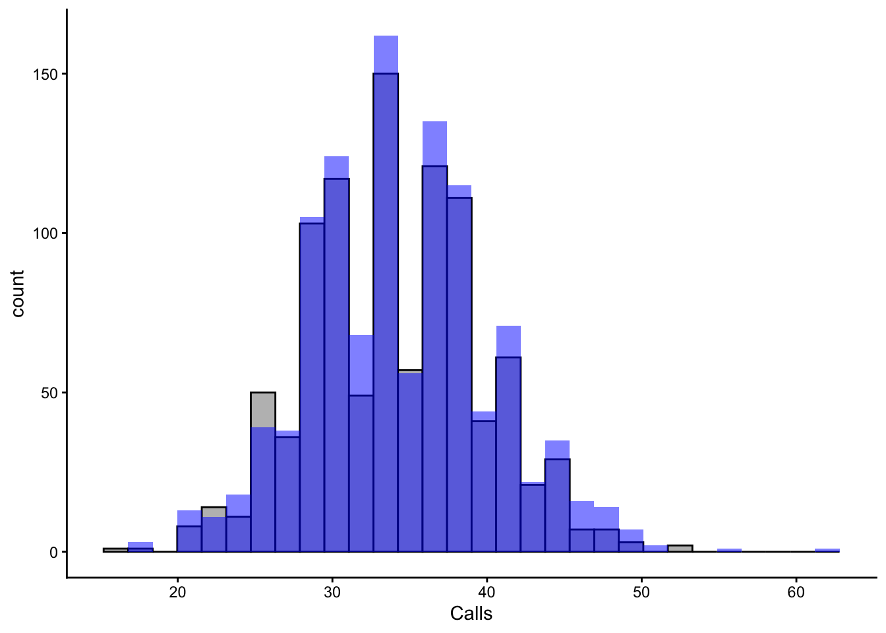

library(tidyverse)
library(extraDistr)2 Tools for Working With Simulation
Business simulation allows companies to model real-world scenarios and experiment with different strategies in a controlled, cost-effective environment. By using tools like R, businesses can simulate complex processes, such as customer demand, operational workflows, or financial projections, and analyze the potential outcomes without the risks associated with actual implementation. In the next couple of modules, we’ll explore how to use R to perform various simulation tasks, providing you with the skills to create and analyze your business models.
To effectively build and analyze simulation models, it’s essential first to understand the foundational tools and techniques in R. In this module, we’ll learn how to store and manipulate data in R, generate random numbers, and write code that operates on an entire data set at once. This last skill is called vectorization, and it is what makes it practical to run hundreds of thousands of scenarios in the time it takes a spreadsheet to run a handful. Mastering these skills will enable you to create realistic simulations that can accurately model real-world business processes.
Throughout these chapters we will rely on the tidyverse, a collection of R packages that share a common design for storing, transforming, and visualizing data. We will also use extraDistr for a few probability distributions that base R does not include.
2.1 Storing Our Data in R
Objects, vectors, and tibbles are all critical in the R programming language. They are helpful when storing and manipulating data in R. An object is a container for storing data and computations in R. It can store something as simple as a single integer or as informative as the output in regression analysis. The code below creates an object x that stores the number \(5\).
x<-5Vectors are one-dimensional data arrays that can be stored in an object. They can contain elements of various data types, such as numerical values, character, or logical values (i.e., TRUE or FALSE). However, every component of the vector must be the same data type. Below, the vector books stores the titles of \(5\) monster classics a bookstore plans to release.
books<-c("Frankenstein","Dracula","Moby Dick",
"War Of The Worlds","Beowulf")Vectors are the reason R is so well suited to simulation. When you write books, R is not holding five separate values that must be visited one at a time; it is holding a single object that R knows how to operate on all at once. Keep this in mind, as it is the idea we will exploit for the rest of the chapter.
Lastly, a tibble is a two-dimensional data table with rows and columns. Each column in a tibble represents a different variable, and each row represents a single observation or record. Think of a tibble as a collection of related vectors of the same length. The tibble() function from the tidyverse builds one by naming each column and supplying its vector of values.
tibble(Books=c("Frankenstein","Dracula",
"Moby Dick",
"War Of The Worlds","Beowulf"),
Price=c(9.5,5.78,6.34,5.67,2.45))# A tibble: 5 × 2
Books Price
<chr> <dbl>
1 Frankenstein 9.5
2 Dracula 5.78
3 Moby Dick 6.34
4 War Of The Worlds 5.67
5 Beowulf 2.45You may also encounter the data.frame() function, which is base R’s version of the same idea. A tibble is a data frame; it simply prints more informatively (notice that it reports the dimensions and the type of each column) and behaves more predictably. We will use tibble() from here on. A tibble is the natural home for a simulation: each row will be one scenario, and each column will be one of the quantities we care about.
2.2 Generating Random Numbers in R
Several functions are available in R that can be used to generate random numbers. These functions are based on a specific probability distribution. For instance, the rbinom() function generates random numbers based on the binomial distribution, while the runif() and rnorm() functions generate random numbers based on the uniform and normal distributions, respectively. The table below lists some functions that generate random numbers and their probability distribution.
| Distribution | Family | Package | Function |
|---|---|---|---|
| Uniform | Discrete | extraDistr | rdunif() |
| Binomial | Discrete | Base R | rbinom() |
| Hypergeometric | Discrete | Base R | rhyper() |
| Poisson | Discrete | Base R | rpois() |
| Uniform | Continuous | Base R | runif() |
| Normal | Continuous | Base R | rnorm() |
| Exponential | Continuous | Base R | rexp() |
| Triangle | Continuous | extraDistr | rtriang() |
Recall that the binomial distribution illustrates the probability of x successes from an experiment with n trials. We can use the distribution to generate random numbers by providing the probability of success (p) and the number of trials (n) parameters. Similarly, the uniform distribution shows the probability of a random variable within a minimum and maximum limit. Hence, we can generate random numbers from the distribution by providing the minimum and the maximum. In general, we can generate random numbers that follow a variety of distributions by providing the required arguments to the particular random number generator needed.
Every one of these functions shares the same convenient feature: the first argument is how many numbers you want. rbinom(1,100,0.7) returns a single draw, and rbinom(100000,100,0.7) returns one hundred thousand draws in a single call. Asking for all the numbers at once, rather than one at a time, is the first and most important habit to build.
In addition to the functions mentioned above, R provides the sample() function, a versatile tool for generating random values from a specified data set. The sample() function allows users to randomly select a specified number of elements from a vector, either with or without replacement. For example, sample(x, size, replace = FALSE) randomly selects elements from the vector x. If replace = TRUE, the function will sample with replacement, meaning the same element can be selected more than once. You can also pass a vector of probabilities using the prob argument, allowing you to generate various observed distributions.
In the code below we simulate the toss of a “biased coin” that turns head 60% of the times.
sample(c("H","T"), 5, replace= TRUE, prob=c(0.6,0.4))[1] "H" "H" "H" "T" "H"2.3 Nightmare Reads Simulates Demand
Nightmare Reads bookstore wishes to determine how many customers will buy their Monster Classic Series. They plan to send \(100\) catalogs by mail to potential customers. Before they send the catalogs, they decide to get an estimate on demand. Past data reveals that a customer will buy a book from the catalog with a probability of \(0.70\). Using R, they simulate the demand generated by their catalog.
(MS<-tibble(Books=c("Frankenstein","Dracula",
"Moby Dick",
"War Of The Worlds","Beowulf"),
Price=c(9.5,5.78,6.34,5.67,2.45),
Demand=rbinom(5,100,0.7)))# A tibble: 5 × 3
Books Price Demand
<chr> <dbl> <int>
1 Frankenstein 9.5 69
2 Dracula 5.78 67
3 Moby Dick 6.34 73
4 War Of The Worlds 5.67 66
5 Beowulf 2.45 71The demand for the book is generated using the rbinom() function. The first input of the rbinom() function specifies how many random numbers are needed (\(5\)), the second one specifies the number of trials in the experiment (\(100\)), and the last one specifies the probability of success (\(0.7\)). Wrapping the whole assignment in parentheses is a small convenience: it stores the tibble in MS and prints it at the same time.
The bookstore can now assess the Monster Series’s revenues with these demands. Because Price and Demand are vectors of the same length, multiplying them multiplies the first price by the first demand, the second price by the second demand, and so on. There is no need to walk through the books one at a time.
MS<-MS %>% mutate(Revenue=Price*Demand)
MS# A tibble: 5 × 4
Books Price Demand Revenue
<chr> <dbl> <int> <dbl>
1 Frankenstein 9.5 69 656.
2 Dracula 5.78 67 387.
3 Moby Dick 6.34 73 463.
4 War Of The Worlds 5.67 66 374.
5 Beowulf 2.45 71 174.The mutate() function from the tidyverse adds (or replaces) a column in a tibble. The %>% symbol is called the pipe, and it takes whatever is on its left and passes it as the first argument to the function on its right. So MS %>% mutate(...) reads as “take MS, then add a column to it.” Pipes let us chain several transformations in the order we think about them, which is why they read so naturally once you are used to them.
2.4 Why Vectorization Is Worth The Trouble
If you have programmed before, or if you have built models in a spreadsheet, your instinct for the revenue calculation above was probably to walk through the books one at a time. In R this is done with a for loop, a construct that repeats a block of code once for each element of a vector. Here is the same revenue calculation written as a loop.
Revenue<-c()
for (i in MS$Price) {
Revenue<-c(Revenue,i*rbinom(1,100,0.7))
}
Revenue[1] 646.00 410.38 399.42 368.55 169.05The code above starts by creating an empty vector to store the revenue generated by each book. The loop then takes the first price in the MS$Price vector, multiplies it by a single random number drawn from the binomial distribution with \(100\) trials and probability \(0.7\), and glues the result onto the end of Revenue with c(Revenue, ...). This process is repeated for every number in the MS$Price vector, leading to a final vector with each book’s revenues.
The loop is not wrong, and with five books nobody would notice the difference. Simulation, however, is not about five rows. It is about a hundred thousand or more. Vectorization means performing an operation on an entire vector at once rather than iterating through each element one by one, and the cost of ignoring it grows with the size of the problem. The system.time() function reports how long a block of code takes to run, so we can measure the difference rather than argue about it. Below we simulate the revenue of a single title \(50{,}000\) times, first with the loop we just wrote.
n<-50000
set.seed(1)
loop_time<-system.time({
Revenue<-c()
for (i in 1:n) {
Revenue<-c(Revenue, 9.5*rbinom(1,100,0.7))
}
})["elapsed"]
loop_timeelapsed
2.487 Now the same \(50{,}000\) scenarios, written as a single vectorized expression.
vector_time<-system.time({
Revenue<-9.5*rbinom(n,100,0.7)
})["elapsed"]
vector_timeelapsed
0.003 The loop takes about 2.49 seconds; the vectorized version takes about 0.003 seconds. That is roughly 829 times faster for exactly the same answer. Two separate costs are hiding in the loop. The first is that R must set up and tear down the call to rbinom() fifty thousand times instead of once. The second, and the larger one here, is that c(Revenue, ...) builds a brand new vector on every pass, copying everything computed so far. A loop that grows an object this way slows down as it runs.
2.5 Conditional Logic Without Loops
Simulation models are rarely a single formula. Different scenarios call for different treatment: weekday versus weekend, in stock versus sold out, one customer segment versus another. Conditionals are what let us branch on a condition, and the familiar tool for this is the if–else statement, which executes one block of code when a condition is true and a different block when it is false.
Let us go back to the Monster Classic example and assume that the bookstore has gained additional insight into the demand for their collection. In particular, assume that if the book is either Frankenstein or Dracula, the probability of a customer buying it is \(0.9\) (the probability of the other books remains at \(0.7\)). Written with a loop and a conditional, the simulation looks like this.
demand<-c()
for (i in MS$Books){
if (i=="Frankenstein" | i=="Dracula"){
p<-0.9
} else {
p<-0.7
}
demand<-c(demand,rbinom(1,100,p))
}
demand[1] 89 92 68 76 77In the code above, the inner conditional checks whether the title is either Frankenstein or Dracula. If so, the random binomial number is drawn with probability \(0.9\); if not, it is drawn with probability \(0.7\). The loop goes through all the books in the series and adds a simulated demand for each.
The vectorized alternative is the ifelse() function, which applies the test to every element of a vector and returns a vector of the same length. Its first argument is the logical condition, the second is the value to use where the condition is true, and the third is the value to use where it is false.
demand<-ifelse(MS$Books=="Frankenstein" | MS$Books=="Dracula",
rbinom(length(MS$Books),100,0.9),
rbinom(length(MS$Books),100,0.7))
demand[1] 92 86 67 71 68There is one subtlety worth knowing. ifelse() evaluates both of its branches in full and then picks element by element. In the code above, R draws five binomial values with \(p=0.9\) and five more with \(p=0.7\), then keeps the appropriate one for each position. This is harmless here, and it is why both branches must be full-length vectors rather than single values.
When there are more than two cases, nesting ifelse() calls inside one another gets hard to read. The tidyverse provides case_when() for this situation. Each argument is a formula of the form condition ~ value, the conditions are checked in order, and the .default argument supplies the value used when none of them match. Suppose the bookstore charges a higher price for its two flagship titles, a middling price for anything above six dollars, and a discount price otherwise.
MS %>% mutate(Tier=case_when(
Books=="Frankenstein" | Books=="Dracula" ~ "Flagship",
Price>6 ~ "Standard",
.default = "Discount"))# A tibble: 5 × 5
Books Price Demand Revenue Tier
<chr> <dbl> <int> <dbl> <chr>
1 Frankenstein 9.5 69 656. Flagship
2 Dracula 5.78 67 387. Flagship
3 Moby Dick 6.34 73 463. Standard
4 War Of The Worlds 5.67 66 374. Discount
5 Beowulf 2.45 71 174. DiscountNotice that case_when() is being used inside mutate(), and that it refers to the Books and Price columns directly by name. This is the pattern we will use for the rest of the book: one tibble holding every scenario, and columns built from other columns with mutate(), ifelse(), and case_when().
2.6 The VA Department of Transportation Wants Your Services
The VA ferry crossing the James River was first established in \(1925\). The ferry transports vehicles back and forth from Jamestown to Scotland in a \(15\)-minute ride. The VA Department of Transportation wants you to simulate the daily demand for the ferry so that they can schedule staff and the number of ferries to run.
Assume that the VA Department of transportation shares four weeks of data with hopes of us being able to simulate the fifth week. Can we generate a convincing simulation of the data? The table below records the number of vehicles that used the ferry service:
| Day | Week 1 | Week 2 | Week 3 | Week 4 |
|---|---|---|---|---|
| Mon | 1105 | 1020 | 1163 | 1070 |
| Tue | 1128 | 1048 | 1066 | 1145 |
| Wed | 1189 | 1102 | 1183 | 1083 |
| Thu | 1175 | 1094 | 1003 | 1045 |
| Fri | 1101 | 1142 | 1095 | 1018 |
| Sat | 1459 | 1464 | 1408 | 1443 |
| Sun | 1580 | 1534 | 1512 | 1599 |
One thing that becomes apparent is that weekdays have less demand for the ferry than weekends. In particular, weekday ferry rides seem to vary between \(1000\) and \(1200\) while weekend rides vary between \(1400\) and \(1600\). Let’s store the data in a tibble so that we can confirm this. Rather than keeping two separate vectors, we record one row per observation and let a column tell us which kind of day it was.
ferry<-tibble(
Day=rep(c("Mon","Tue","Wed","Thu","Fri","Sat","Sun"), each=4),
Week=rep(1:4, times=7),
Rides=c(1105,1020,1163,1070,
1128,1048,1066,1145,
1189,1102,1183,1083,
1175,1094,1003,1045,
1101,1142,1095,1018,
1459,1464,1408,1443,
1580,1534,1512,1599)) %>%
mutate(Type=ifelse(Day %in% c("Sat","Sun"), "Weekend", "Weekday"))
ferry %>% group_by(Type) %>%
summarise(Days=n(), Low=min(Rides), High=max(Rides))# A tibble: 2 × 4
Type Days Low High
<chr> <int> <dbl> <dbl>
1 Weekday 20 1003 1189
2 Weekend 8 1408 1599The rep() function repeats values, and its two arguments do different jobs: each=4 repeats every day four times in a row (Mon, Mon, Mon, Mon, Tue, …), while times=7 repeats the whole sequence \(1,2,3,4\) seven times. Together they lay out the table above one row at a time. The %in% operator asks whether each value belongs to a set, which is a compact way to test for “Saturday or Sunday.” Finally, group_by() splits the tibble into groups and summarise() collapses each group to a single row, with n() reporting how many rows fell into the group. This pairing is the workhorse of the next chapter.
Now we can visualize the weekday data with a histogram.
ferry %>% filter(Type=="Weekday") %>%
ggplot() +
geom_histogram(aes(x=Rides), binwidth=50, boundary=1000,
fill="grey", col="black") +
labs(title="Weekday Ferry Rides", x="Cars", y="Frequency") +
theme_classic()
The ggplot() function opens a plot, geom_histogram() adds the bars, aes() maps the Rides column to the horizontal axis, and labs() and theme_classic() handle the titles and the overall look. The filter() function keeps only the rows that satisfy a condition, in this case the weekdays.
This visual shows that ferry rides are roughly uniformly distributed during the weekdays. Furthermore, if you were to graph the histogram for weekends, you would once again notice that the rides follow a uniform distribution. Using this information, we can now simulate week five. Given that cars are discrete, we use the discrete uniform random number generator rdunif() from the extraDistr package.
set.seed(14)
week5<-tibble(Day=c("Mon","Tue","Wed","Thu","Fri","Sat","Sun")) %>%
mutate(Type=ifelse(Day %in% c("Sat","Sun"), "Weekend", "Weekday"),
Rides=ifelse(Type=="Weekend",
rdunif(n(),1400,1600),
rdunif(n(),1000,1200)))
week5# A tibble: 7 × 3
Day Type Rides
<chr> <chr> <dbl>
1 Mon Weekday 1086
2 Tue Weekday 1097
3 Wed Weekday 1076
4 Thu Weekday 1179
5 Fri Weekday 1032
6 Sat Weekend 1502
7 Sun Weekend 1587The whole week is generated in one statement. ifelse() draws seven numbers from the weekend range and seven from the weekday range, then keeps the weekend draw for Saturday and Sunday and the weekday draw for the other five days. The n() function returns the number of rows in the tibble, so the code keeps working if we later decide to simulate a month instead of a week. The set.seed() function is used so that the reader can replicate the values generated if needed.
Below, the table is reproduced once more, but with the simulated values. Can you identify the simulated values from the ones provided by the VA Department of Transportation?
| Day | Week 1 | Week 2 | Week 3 | Week 4 | Week 5 |
|---|---|---|---|---|---|
| Mon | 1105 | 1020 | 1163 | 1070 | 1086 |
| Tue | 1128 | 1048 | 1066 | 1145 | 1097 |
| Wed | 1189 | 1102 | 1183 | 1083 | 1076 |
| Thu | 1175 | 1094 | 1003 | 1045 | 1179 |
| Fri | 1101 | 1142 | 1095 | 1018 | 1032 |
| Sat | 1459 | 1464 | 1408 | 1443 | 1502 |
| Sun | 1580 | 1534 | 1512 | 1599 | 1587 |
2.7 When Vectorization Is Not Enough
Vectorization handles most of what a simulation needs, but not everything. Two situations come up often enough to deserve their own tools.
The first is when each repetition produces something bigger than a number, such as an entire simulated week. The tidyverse provides the map family of functions from the purrr package for this. map() applies a function to each element of a vector and returns a list of results; map_dbl() does the same but insists that each result be a single number, returning a plain numeric vector. Suppose the Department of Transportation wants the distribution of total weekly ridership across a thousand simulated weeks.
simulate_week<-function(){
Type<-c(rep("Weekday",5), rep("Weekend",2))
Rides<-ifelse(Type=="Weekend",
rdunif(7,1400,1600),
rdunif(7,1000,1200))
sum(Rides)
}
set.seed(21)
weekly_total<-map_dbl(1:1000, ~ simulate_week())
summary(weekly_total) Min. 1st Qu. Median Mean 3rd Qu. Max.
8004 8403 8519 8514 8628 8988 Two pieces of syntax are new here. The function() keyword defines our own function, which is simply a named block of code we can call repeatedly. The ~ in map_dbl(1:1000, ~ simulate_week()) is shorthand for “a function of one argument”; we ignore the argument here because every week is simulated the same way, and we only want the call repeated a thousand times. This is exactly the job a for loop would have done, but map_dbl() states the intent more clearly and hands back a ready-to-use vector instead of asking us to assemble one.
The second situation is genuine path dependence, where each step depends on the result of the previous one. No amount of vectorization can help, because the second value cannot be computed until the first one exists. The accumulate() function, also from purrr, is built for this. Consider a \(1{,}000\) dollar investment held for five years, where each year’s return is a draw from a normal distribution.
set.seed(3)
returns<-rnorm(5, 0.10, 0.18)
accumulate(returns, ~ .x*(1+.y), .init=1000)[1] 1000.0000 926.8520 970.7341 1113.0262 993.5053 1127.8678accumulate() walks through returns and keeps a running value. Inside the formula, .x is the value carried over from the previous step and .y is the current element of returns, so .x*(1+.y) grows last year’s balance by this year’s return. The .init argument supplies the starting balance. The result includes the initial value, so six numbers are returned for five years of returns.
This particular example could also be written as 1000*cumprod(1+returns), and when a shortcut like that exists you should use it. But suppose the investor also adds \(6{,}000\) dollars at the end of each year. The cumprod() trick breaks down immediately, while accumulate() needs only a small edit.
accumulate(returns, ~ (.x+6000)*(1+.y), .init=1000)[1] 1000.000 6487.964 13079.211 21875.878 24882.462 35059.0342.8 Chi Square Test
Although we have visual confirmation that ferry rides during weekdays are uniformly distributed, we would like to perform a statistical test to prove that this is in fact the case. The Chi-Square Test is generally used to compare observed frequencies with expected frequencies across categorical data. Using this comparison, we can determine if the observed data does in fact follow the hypothesized distribution. Below is code to perform the test:
# Observed frequencies
observed <- c(5, 5, 5, 5, 5)
# Expected frequencies under uniform distribution
# Since we have 5 categories and assuming uniform distribution,
# each category is expected to have an equal frequency.
num_categories <- length(observed)
# Perform the Chi-Square test
chi_square_test <- chisq.test(observed, p = rep(1/num_categories, num_categories))
# Display the test results
print(chi_square_test)
Chi-squared test for given probabilities
data: observed
X-squared = 0, df = 4, p-value = 1Chi-Square Statistic (X-squared) measures the divergence between observed and expected frequencies. Since the observed distribution is the same as the expected frequency, the divergence is 0. The p-value indicates the probability of observing a Chi-Square statistic as extreme as, or more extreme than, the one computed, assuming the null hypothesis (that the distribution is uniform) is true. A small p-value (typically < 0.05) indicates that the observed distribution is significantly different from a uniform distribution. Since the reported p-value is 1, we can’t reject the null hypothesis and we vote in favor of ferry rides being uniformly distributed.
Note that the Chi-Square test can be used for any discrete distribution or alternately as an approximation when the distributions are continuous. For testing normality (continuous distribution), other tests like the Shapiro-Wilk (shapiro.test() in R) or Kolmogorov-Smirnov (ks.test()) are more commonly used and better suited than the Chi-Square test.
2.9 Readings
These readings will help you review the concepts and theory necessary for completing this chapter. Grolemund (2014) reviews the R basics needed to perform computer simulation, Jaggia and Kelly (2022) introduces probability distributions, Gelves (2022) has several applied probability problems (with solutions), while Winston and Albright (2019) provides an application of the distributions to business simulation.
Grolemund (2014) Chapter 1 (The Very Basics), Chapter 2 (Packages and Help Pages), Chapter 3 (R Objects), Chapter 7.2, 7.3 (Conditional Statements), Chapter 9.3, 9.4, 9.5 (Loops). The loop material is worth reading once so that you recognize the construct, but keep in mind that we will prefer vectorized code throughout.
Jaggia and Kelly (2022) Chapter 5 (Discrete Probability Distributions) and Chapter 6 (Continuous Probability Distributions).
Gelves (2022) Chapter 10 (Discrete Random Variables), Chapter 11 (Continuous Random Variables). This is mainly review from your probability course. It is recommended you attempt the exercises in both chapters (solutions are provided at the end).
Winston and Albright (2019) Chapter 10.1 (Introduction) and 10.2 (Probability Distributions for Input Variables). Pay special attention to the probability distributions and try to replicate the examples in R.
2.10 Lessons Learned In This Chapter
Generate random numbers using R functions.
Store simulations in tibbles and build new columns with
mutate().Vectorize a simulation and measure the speed gain over a for loop.
Apply conditional logic without loops using
ifelse()andcase_when().Use
map_dbl()andaccumulate()when vectorization is not possible.
2.11 Exercises
- SpaceX needs a countdown script for their next spaceship launch. Your task is to create a countdown that starts from 10 and goes down to 1, followed by a message saying “Liftoff!”. Do this without writing a for loop: build the countdown as a vector and use the
walk()function frompurrr, which applies a function to each element of a vector for its side effect (printing, in this case) rather than for its return value. After the countdown, print “Liftoff!” to simulate the spaceship launch.
Suggested Answer
walk(10:1, print)[1] 10
[1] 9
[1] 8
[1] 7
[1] 6
[1] 5
[1] 4
[1] 3
[1] 2
[1] 1print("Liftoff!")[1] "Liftoff!"- The Triangle Tavern, a popular nightlife spot, needs your help to enforce its strict age policy. The owner has observed that the youngest patrons trying to enter are around 16 years old, and the oldest are typically no more than 25. The bouncers report that 21-year-olds are the most common age group among patrons. Your task is to estimate the proportion of underage patrons that attempt to enter the bar using the triangle distribution. Build a tibble named patrons that simulates the ages of 1000 customers and adds an Entry column with “Access Granted” for ages 21 and older and “Access Denied” for ages under 21. Then report the share of patrons that are turned away.
Suggested Answer
Use the rtriang() function from the extraDistr package to generate 1,000 ages, and ifelse() to turn those ages into an entry decision. Both columns are created in a single tibble() call, since a column may refer to one defined before it.
set.seed(5)
patrons<-tibble(Age=rtriang(1000,16,25,21)) %>%
mutate(Entry=ifelse(Age>=21,"Access Granted","Access Denied"))The share turned away is then a single summarise() away. Recall that a logical comparison returns a vector of TRUE and FALSE values, and that the mean of such a vector is the proportion of TRUE values.
patrons %>% summarise(Denied=round(mean(Entry=="Access Denied"),2))# A tibble: 1 × 1
Denied
<dbl>
1 0.54- The Bellagio Casino in Las Vegas wants you to create a simulation of their roulette wheel, where players bet on whether the outcome will be red or black. In a standard roulette wheel, there are 18 red slots, 18 black slots, and 2 green slots (0 and 00) out of a total of 38 slots. Your task is to simulate a player betting on red for 100 spins of the roulette wheel using vectorized code. If the ball lands on a red slot, the player wins and earns 1 dollar. If the ball lands on a black or green slot, the player loses 1 dollar. What are the player’s total winnings or losses after 100 spins? Now repeat the exercise for 100,000 spins. How does the “house edge” (the presence of the green slots) affect the player’s outcome over many spins?
Suggested Answer
All 100 spins can be drawn at once with sample(), and the payoff for every spin can be assigned at once with ifelse().
set.seed(10)
wheel<-c(rep("red",18), rep("black",18), rep("green",2))
spins<-tibble(Spin=1:100,
Result=sample(wheel,100,replace=TRUE)) %>%
mutate(Payoff=ifelse(Result=="red",1,-1))
sum(spins$Payoff)[1] -14The same code simulates a hundred thousand spins by changing two numbers. Because the average payoff converges to \(-2/38\), the house edge guarantees the player loses in the long run.
set.seed(10)
spins<-tibble(Spin=1:100000,
Result=sample(wheel,100000,replace=TRUE)) %>%
mutate(Payoff=ifelse(Result=="red",1,-1))
spins %>% summarise(Total=sum(Payoff), Average=mean(Payoff))# A tibble: 1 × 2
Total Average
<dbl> <dbl>
1 -5472 -0.0547- Franklin and Templeton wants you to generate 4 simulated returns for the SPY (an ETF that tracks the S&P 500). They provide you with the data and histogram shown below. What distribution would you use to simulate the data? What parameters would you use?
data<-read_csv("https://jagelves.github.io/Data/returns.csv")
data %>% filter(Stock=="TSLA") %>% ggplot() +
geom_histogram(aes(x=Return), bg="grey",col="black") +
theme_classic()
Suggested Answer
The distribution of returns looks normal. We can use the mean and the standard deviation of the sample provided as inputs in the rnorm() function.
data %>% filter(Stock=="SPY") %>% ggplot() +
geom_histogram(aes(x=Return), bg="grey",col="black") +
geom_histogram(aes(x=rnorm(length(Return),mean(Return),
sd(Return))), bg="blue",
alpha=0.5) +
theme_classic()
As you can see the simulated demand follows the pattern of the sample returns (i.e. the normal distribution). To retrieve the mean and standard deviation of each investment we can use the code below:
(stats<-data %>% group_by(Stock) %>%
summarise(Average=mean(Return),
SD=sd(Return)))# A tibble: 3 × 3
Stock Average SD
<chr> <dbl> <dbl>
1 AAPL 0.00173 0.0257
2 SPY 0.000828 0.0177
3 TSLA 0.00511 0.0502Lastly, we can now use the mean and the standard deviation of SPY to simulate four returns. Rather than typing the numbers back in, we pull them out of the summary table with filter() and pull(), which extracts a single column as a vector.
set.seed(7)
SPY<-stats %>% filter(Stock=="SPY")
rnorm(4, SPY$Average, SPY$SD)[1] 0.041297959 -0.020347740 -0.011456950 -0.006467293- XYZ Call Center, a popular customer service provider, wants you to simulate the daily number of calls their agents receive. The company has provided you with each employee’s call volume for a day and the histogram for the data. Analyze the data to determine the appropriate distribution that can be used to model the number of daily calls. You can determine the parameters for the distribution based on the historical data. Generate four simulated values representing the possible daily call volumes using the chosen distribution and parameters. What distribution would you use to simulate the daily call volumes for XYZ Call Center? What are the parameters of the chosen distribution? What are the four simulated daily call volumes?
data<-read_csv("https://jagelves.github.io/Data/CallCenter.csv")
data %>% ggplot() +
geom_histogram(aes(x=Calls), bg="grey",col="black") +
theme_classic()
Suggested Answer
Given the context of the problem and data, we can think about using the Poisson distribution. The data shows us number of calls per day for each employee (i.e. number of successes in a given time interval). The mean number of calls is 34.079 per day. We can use this parameter to generate simulated data as shown below.
data %>% ggplot() +
geom_histogram(aes(x=Calls), bg="grey",col="black") +
geom_histogram(aes(x=rpois(length(Calls),mean(Calls,na.rm=TRUE))),
bg="blue",
alpha=0.5) +
theme_classic()
The simulated data seems to resemble the call center data. We can perform a Chi-Squared Test:
observed <- table(data$Calls)
# Calculate the mean (lambda) for the Poisson distribution
lambda <- mean(data$Calls, na.rm=TRUE)
# Calculate the expected frequencies for each observed count
expected <- dpois(as.numeric(names(observed)), lambda) * sum(observed)
# Perform the Chi-Square test
chi_square_test <- chisq.test(x = observed, p = expected / sum(expected))
# Display the test results
print(chi_square_test)
Chi-squared test for given probabilities
data: observed
X-squared = 35.136, df = 34, p-value = 0.4141Given the large p-value, we can’t reject the null and vote in favor a Poisson distribution. Now we can generate four simulated number of calls in a day by using the rpois() function and the estimated mean number of calls in a day.
rpois(4,mean(data$Calls,na.rm=TRUE))[1] 28 34 32 33